png → svg · bitmap tracing
Open Image Tracer converts PNG and JPEG images into scalable SVGs, like Inkscape's Trace Bitmap, with extras for screenshots: smart colour palettes, JPEG cleanup, text recognised as real SVG text, and single-stroke tracing for line art. Free and open source for Linux, Windows and macOS.
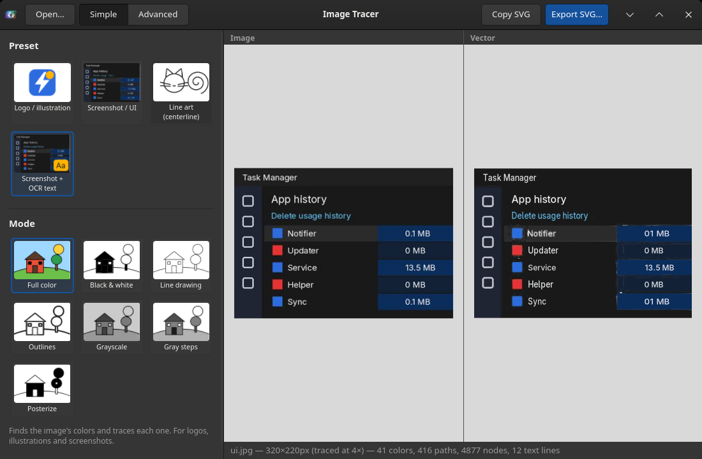
The real app, tracing a screenshot: original on the left, SVG on the right. 41 colours, 416 paths, and 12 lines of text kept as text.
features
Simple shows only presets and modes; Advanced shows every setting, each with a field for typing exact values.
<text> in the SVG.modes
Every picture below is the app's own output, rendered from its sample images.
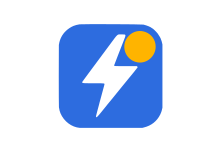
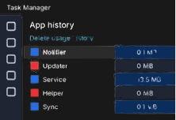
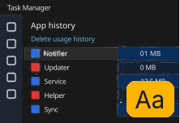
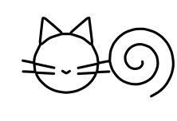
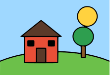
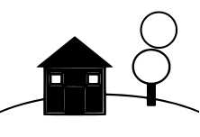
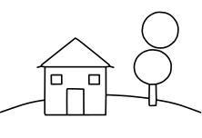
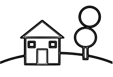
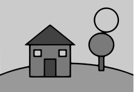
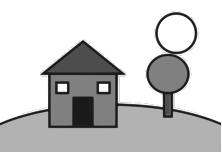
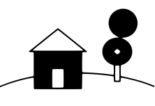
install
Packages for every major system. Windows and macOS builds aren't code-signed yet, so your OS may warn you the first time.
The Flatpak runs on any distribution and includes OCR. Or pick your distribution's native package:
| System | Install |
|---|---|
| Any Linux (Flatpak) | flatpak install --user Open-Image-Tracer-x86_64.flatpak |
| Any Linux (AppImage) | chmod +x Open-Image-Tracer-x86_64.AppImage, then run it |
| Debian 13+, Ubuntu 24.04+ | sudo apt install ./Open-Image-Tracer-all.deb |
| Fedora | sudo dnf install ./Open-Image-Tracer-noarch.rpm |
| Arch, Manjaro | sudo pacman -U Open-Image-Tracer-any.pkg.tar.zst |
The Flatpak opens and saves files through the system's file dialogs and can't reach AI upscalers installed on the host; use a native package for upscaling.
Download the installer (.exe) or the .msi and run it. If SmartScreen warns you, choose More info → Run anyway.
Download the disk image for your Mac: Apple Silicon or Intel. Open it and drag the app to Applications. It isn't signed yet, so the first time, right-click the app and choose Open.
Needs Python 3.10+, GTK 4 with PyGObject and pycairo, numpy, Pillow and potrace. Tesseract (with English data) is optional, for OCR.
git clone https://github.com/sabaoongfx/oit-open-image-tracer cd oit-open-image-tracer python3 image_tracer.py
On Arch or Manjaro: sudo pacman -S python-gobject gtk4 python-cairo python-numpy python-pillow potrace tesseract tesseract-data-eng. python3 tools/install_desktop.py adds a menu entry and icon for your user.
download
Direct links to the latest release, free and open source under the GPL.
specs